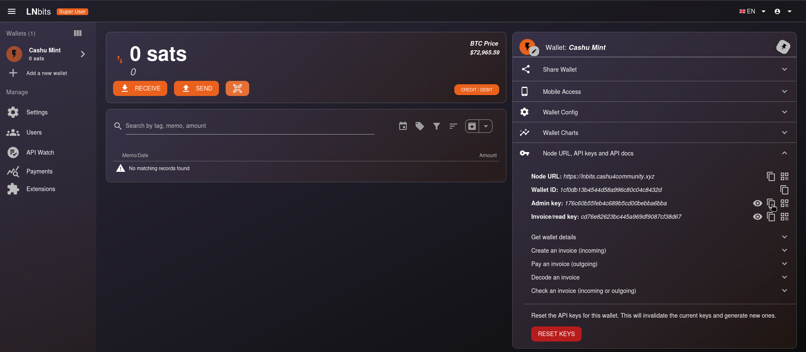

Mint de Cashu (Nutshell)
El Mint de Cashu es el componente principal de la infraestructura, es quien custodia los bitcoins de los usuarios, a cambio emite tokens ("cupones digitales") que representan ese valor. A continuación explicaremos el proceso de configuración.
Configuración del Mint de Cashu
El proceso de configuración es muy sencillo, en el paso de configuración de la infraestructura mediante el script config_env.sh se generó la clave MINT_PRIVATE_KEY necesaria en el proceso de generación de claves del mint.
1. Configuramos el backend lightning (LNbits)
En LNbits podemos crear una cuenta nueva para que guarde los fondos de los usuarios del mint. O usamos la cuenta admin creada en la configuración de LNbits.
Por defecto las billeteras se llaman LNbits wallet, la renombramos a Cashu Mint:

2. Obtenemos la clave API de la billetera

Admin key o Invoice read key.
3. Modificamos el archivo .env con los datos de LNbits
Editamos el archivo .env localizado en la ruta /cashu4cs-deploy/app-data/cashu/.env y buscamos las líneas siguientes:
# Use with LNbitsWallet
MINT_LNBITS_ENDPOINT=https://yourlnbits.com
MINT_LNBITS_KEY=gds87dskdsjhds71dsdsdsds2eQuedando así:
# Use with LNbitsWallet
MINT_LNBITS_ENDPOINT=https://lnbits.cashu4community.xyz
MINT_LNBITS_KEY=8e54079dc12b46a2b216153222c29a8aLNbitsWallet, lo hacemos buscando en el archivo .env el parámetro MINT_BACKEND_BOLT11_SAT. Si tiene otra cosa, cambiar al de LNbits.
Actualizando el mint de Cashu
Como usamos Docker de soporte de la infraestructura, el proceso de actualización se hace relativamente fácil.
1. Respaldamos la base de datos del mint
Realizamos una copia de la base de datos ubicada en /cashu4cs-deploy/app-data/cashu/data/mint/mint.sqlite3:
cd cashu4cs-deploy/
cp app-data/cashu/data/mint/mint.sqlite3 app-data/cashu/backup2. Actualizamos el número de versión en el docker-compose.yml
Editamos el archivo docker-compose.yml ubicado en la raíz del proyecto. Localizamos el servicio cashu:
cashu:
image: cashubtc/nutshell:0.19.2Actualizamos con la versión más reciente:
cashu:
image: cashubtc/nutshell:0.20.23. Hacemos efectivo los cambios
./recreate.sh cashuCreando un nuevo Keyset desde la CLI
Usaremos mint-cli para rotar los keyset y definir la comisión. Esto lo haremos para cada una de las unidades que tengamos en el mint (sats, usd, etc).
Para conocer que unidades tenemos activas, consultamos el endpoint /v1/keysets:
curl https://mint.cashu4community.xyz/v1/keysets
{
"keysets": [
{
"id": "0145ee812683eaf8...",
"unit": "sat",
"active": true,
"input_fee_ppk": 100,
"final_expiry": null
}
]
}Si quisiéramos cambiar el fee de 100 ppk (per-proof-of-knowledge) a 50 ppk, ejecutamos dentro del contenedor de cashu:
poetry run mint-cli -h cashu next-keyset sat 50
final_expiry = None
New keyset successfully created:
keyset.id = '01e5bac64190f22f...'
keyset.unit = 'sat'
keyset.max_order = 64
keyset.input_fee_ppk = 50-h que acompaña al comando mint-cli es necesario porque en entornos Docker no se puede acceder directamente a 127.0.0.1, es por eso que usamos cashu ya que es el nombre del servicio declarado en el docker-compose.
Comprobamos que se creó el nuevo keyset:
curl https://mint.cashu4community.xyz/v1/keysets
{
"keysets": [
{
"id": "0145ee812683eaf8...",
"unit": "sat",
"active": false,
"input_fee_ppk": 100,
"final_expiry": null
},
{
"id": "01e5bac64190f22f...",
"unit": "sat",
"active": true,
"input_fee_ppk": 50,
"final_expiry": null
}
]
}